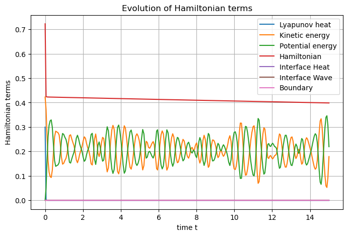
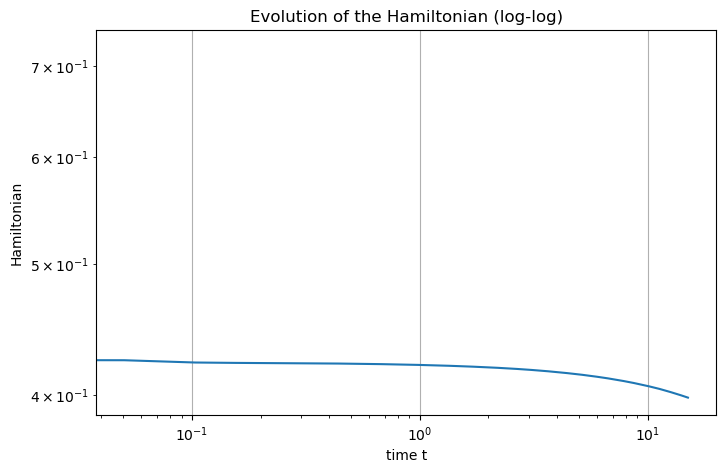

Heat wave coupling
file: sandbox/heat_hw.py
authors: Giuseppe Ferraro, Ghislain Haine
date: 15 dec. 2022
brief: a 2D coupled heat-wave system
- examples.heat_wave.heat_wave_eq(heat_region=1, wave_region=2, *, factor_solver=None, final_time=2.0, time_step=0.001, save_step=0.05, initial_wave_boundary='clamp', initial_wave_profile='gaussian', long_showcase=False, physics_only=False, output_dir=None)
A physically oriented, energy-dissipative coupled heat-wave example.
Reference: Haine, Matignon & Monteghetti, Mathematical Reports (2022), eqs. (2.1)-(2.2), (3.15), (4.3)-(4.5). This example is NOT the paper’s numerical experiment: it keeps the original SCRIMP heat div-div and wave grad-grad weak forms, choosing compatible mixed FEM spaces.
The original built-in Concentric geometry has disk=1, annulus=2, interface=10, outer boundary=20. CN and the 0-input external Dirichlet condition are used to expose the heat dissipation and closed interconnection in an interpretable power balance.
Interface normals always mean each subdomain’s outward normal. The conservative two-sided conforming interface compiler is enabled by default in the v1.3.0 release-preparation source. Physical labels, FEM declarations and weak forms are unchanged. Ambiguous or unsupported interfaces fail explicitly; use SCRIMP_AUTO_INTERFACE=0 only to recover legacy manual assembly if your model was already oriented by hand.
- Parameters:
heat_region – Domain label of the heat equation (1 or 2).
wave_region – Domain label of the wave equation (the other one).
factor_solver – Optional PETSc LU solver (default: SCRIMP MUMPS).
final_time – Physical end time.
time_step – Fixed Crank–Nicolson time step.
save_step – Accepted trajectory sampling interval.
initial_wave_profile – “gaussian” retains the historical heat/wave condition. “gallery_packet” is a smooth high-angular-wavenumber wave excitation concentrated near the outer radius, with zero initial heat and stress. It is not a certified cavity eigenmode and is available only for a wave annulus.
long_showcase – Produce an opt-in native GetFEM annular-wave PNG/GIF showcase after successful physical integration and VTK export.
physics_only – Run the same full native PDE and initialize the original Hamiltonian terms but skip plots and ParaView files. This allows genuine parallel physics audits on all MPI ranks without concurrent writers; defaults to False and changes no equations, FEM or physical initialization.
initial_wave_boundary – Compatible wave velocity initialization when the exterior boundary belongs to the wave region. “clamp” (default) sets exactly the exterior CG1 degrees of freedom to zero, leaving interior L2-projected coefficients unchanged. “constrained_l2” computes the closest zero-trace field in the physical GetFEM L2 norm (MPI1 only). “unconstrained” reproduces the historical, generally DAE-incompatible Gaussian for diagnostics. Neither valid method relaxes algebraic DAE constraints.
output_dir – Optional explicit user output directory.
- examples.heat_wave.render_heat_wave_energy_ports(system, *, heat_region, wave_region)
Render true GetFEM heat-wave energy transfer from the canonical run.
The two oriented interface sides and the heat-flux dissipation are sampled from the actual solved GetFEM state/mesh. Step-associated CN power and its discrete identity are claimed ONLY if every real accepted PETSc step has been saved. Otherwise powers are honest instantaneous nodal samples; their integrated work is approximate. The renderer is user-facing and must be called collectively in MPI.
- examples.heat_wave.render_heat_wave_long_showcase(times, H, *, profile, wave_region, output_root=None)
Create genuine log-log and annular-wave visuals from THIS run.
Only wave_region=2 can provide the annular gallery. VTK nodal velocity plots are qualitative: they are not a proof of a whispering-gallery eigenmode nor a numerical energy conservation gate. No time interpolation, manufactured data or new physics.
Run and inspect the canonical example
The updated v1.3.0 source now exposes the two heat/wave
subsystem energies and their interface transfer directly
in the original example. The following command produces
real original GetFEM/PETSc states (not synthetic figures).
The strict full nine-case native example-output
campaign passed on 27 November 2026, commit 20d79d0d,
including Heat–Wave MPI2 and a ZIP CRC check.
All cases use a single outputs/<system_name>/ directory,
without legacy global output siblings. This acceptance
covers these original GetFEM/PETSc example configurations,
not arbitrary user-supplied PDE models.
python -m examples.heat_wave \
--final-time 0.2 --time-step 0.002 --save-step 0.002
Files are stored in ./outputs/heat_wave/:
outputs/heat_wave/
png/ Hamiltonian_Heat1_Wave2_2D.png
heat_wave_subsystem_energies.png
heat_wave_interface_powers.png
heat_wave_energy_work.png
svg/ (corresponding vector figures)
mesh/ Concentric.msh, T/T.pvd, p/p.pvd
(original GetFEM VTU time series)
log/ scrimp.log
npz/ heat_wave_observables.npz
json/ heat_wave_observables.json
The canonical plot_Hamiltonian method additionally
saves npz/Hamiltonian_Heat1_Wave2_2D.npz containing
the numerical original Hamiltonian terms and
explicitly classified port powers. p represents
the wave velocity, q its stress, and T
the heat-side temperature.
The energy figure plots separately
\(H_H(t)\), \(H_W(t)\) and
\(H_H(t)+H_W(t)\). The powers figure
plots U_T*Y_T on the heat side and
U_w*Y_w on the wave side, using two
distinct, outward-oriented interface facets.
The physical interface combination is
-U_T*Y_T + U_w*Y_w. Its vanishing is
a sum of signed exchanges, not an assertion
that each exchanged power must be zero.
The heat-side dissipation is
D = integral(e_Q.e_Q, Omega_H) >= 0.
Numerical interpretation matters: with the
command above, each real accepted CN step has been
saved and the canonical example checks the
per-step discrete identity of its quadratic
Hamiltonian (for the validated physical weak form).
The long default run dt=.001, dt_save=.05
saves subsampled states: it cannot reconstruct
the true CN per-step stage powers from these
snapshots alone. Its plot uses actual instantaneous
nodal GetFEM powers and an explicitly labelled
approximate trapezoidal cumulative work.
The general SCRIMP API does not promise
an exact port-Hamiltonian identity for every
PETSc TS method or nonlinear Hamiltonian.
To choose a different user output root:
python -m examples.heat_wave \
--final-time 0.2 --time-step 0.002 --save-step 0.002 \
--output-dir /tmp/my-heat-wave-results
The full output contract, MPI root-only writer
policy, source tests and native acceptance command
are recorded in
docs/V130_EXAMPLES_OUTPUT_CONTRACT.md.
Setting
It is assumed that the 2D wave equation, the 2D wave equation in co-energy formulation and the 2D heat equation have already been studied.
The objective of this example is to deal with interconnection in the sense of port-Hamiltonian systems.
We are interested in the coupled heat-wave system which can be formulated as follows: let \(\Omega := \Omega_W \cup \Omega_H\) be a bounded domain in \(\mathbb{R}^2\) such that \(\Omega_W \cap \Omega_H = \emptyset\), we denote \(\Gamma_I := \partial\Omega_W \cap \partial\Omega_H\) the interface between the two domains, and \(\Gamma_W := \partial\Omega_W \setminus \Gamma_I\) and \(\Gamma_H := \partial\Omega_H \setminus \Gamma_I\). The system of equations reads
together with the transmission conditions across the interface
where \(n_H\) is the outward normal to \(\Omega_H\) and \(n_W\) is the outward normal to \(\Omega_W\). Hence, \(n_H = -n_W\) on \(\Gamma_I\).
Port-Hamiltonian framework
The heat equation
The heat equation reads
together with the boundary ports
and
The wave equation
The Dirichlet boundary condition has to be relaxed by \(\partial_t w = 0\) to fit the port-Hamiltonian framework. Providing this adaptation and the notation \(p := \partial_t w\) and \(q := {\rm grad}\left(w\right)\), the wave equation reads
together with the boundary ports
and
The interconnection
The transmission condition at the interface may be recast as a power-preserving interconnection. It can be either a gyrator or a tranformer interconnection, depending on the chosen causality for each system. We the above choices, we have a gyrator interconnection, indeed, one has
Note
Automatic assembly of conforming interfaces (v1.3.0)
For this Concentric mesh, SCRIMP automatically resolves the
logical interface region 10 into the two adjacent sets of
facets and assembles each normal-dependent weak term on its
correct subdomain side, using that side’s outward normal. This
is the default on the v1.3.0 preparation branch. The physical
gyrator relations U_T = Y_w and U_w = Y_T remain
part of the model, not something inferred from mesh topology.
Unsupported or ambiguous conforming interfaces fail explicitly.
See the interface assembly and MPI production policy
for the scope, geometric orientation and native qualification.
Structure-preserving discretization
The heat equation
We use the div-div formulation already presented in the 2D heat equation example, i.e. we obtain the following system
The wave equation
We use the grad-grad formulation already presented in the 2D wave equation example, i.e. we obtain the following system
The gyrator interconnection
This condition is easy to implement, and leads to
Simulation
Let us start as usual, but using now the Concentric built-in
geometry.
# Import scrimp
import scrimp as S
# Init the distributed port-Hamiltonian system
hw = S.DPHS("real")
# Set the domain (using the built-in geometry `Concentric`)
# Labels: Disk = 1, Annulus = 2, Interface = 10, Boundary = 20
omega = S.Domain("Concentric", {"R": 1.0, "r": 0.6, "h": 0.1})
# And add it to the dphs
hw.set_domain(omega)
It is important to remember here one of the objective of this example:
to understand the region keyword.
For our study case, the heat equation will lie on a region
heat_region, while the wave equation will lie on another region
wave_region. And this has to be stated when defining the states and
co-states, and everytime an integral (either the weak forms or the
Hamiltonian terms) occurs.
# Define the states and costates, needs the heat and wave region's labels
heat_region = 1
wave_region = 2
states = [
S.State("T", "Temperature", "scalar-field", region=heat_region),
S.State("p", "Velocity", "scalar-field", region=wave_region),
S.State("q", "Stress", "vector-field", region=wave_region),
]
# Use of the `substituted=True` keyword to get the co-energy formulation
costates = [
S.CoState("T", "Temperature", states[0], substituted=True),
S.CoState("p", "Velocity", states[1], substituted=True),
S.CoState("q", "Stress", states[2], substituted=True),
]
# Add them to the dphs
for state in states:
hw.add_state(state)
for costate in costates:
hw.add_costate(costate)
The same is true for the resistive port for the heat equation.
# Define the algebraic port
ports = [
S.Port("Heat flux", "e_Q", "e_Q", "vector-field", substituted=True, region=heat_region),
]
# Add it to the dphs
for port in ports:
hw.add_port(port)
# Define the control ports
control_ports = [
S.Control_Port(
"Interface Heat",
"U_T",
"Heat flux",
"Y_T",
"Temperature",
"scalar-field",
region=10,
position="effort"
),
S.Control_Port(
"Interface Wave",
"U_w",
"Velocity",
"Y_w",
"Velocity",
"scalar-field",
region=10,
position="effort"
),
# This port will be either for the wave or the heat equation
# It corresponds to the exterior circle of radius R
S.Control_Port(
"Boundary",
"U_bnd",
"0",
"Y_bnd",
".",
"scalar-field",
region=20,
position="flow"
),
]
# Add it to the dphs
for ctrl_port in control_ports:
hw.add_control_port(ctrl_port)
For the FEM choices, see the previous examples.
# Define the Finite Elements Method of each port
k = 1
FEMs = [
S.FEM("T", k, "DG"),
S.FEM("Heat flux", k+1, "CG"),
S.FEM("Interface Heat", k, "DG"),
S.FEM("p", k+1, "CG"),
S.FEM("q", k, "DG"),
S.FEM("Interface Wave", k, "DG"),
S.FEM("Boundary", k, "DG"),
]
# Add them to the dphs
for FEM in FEMs:
hw.add_FEM(FEM)
The Brick object does not have an optional region keyword, it
is mandatory: more precisely, it requires a list of regions as third
argument.
# Define the pHs via `Brick` == non-zero block matrices == variational terms
# Since we use co-energy formulation, constitutive relations are already taken into
# account in the mass matrices M_q and M_p
bricks = [
# === Heat: div-div
S.Brick("M_T", "T*Test_T", [heat_region], dt=True, position="flow"),
S.Brick("M_Q", "e_Q.Test_e_Q", [heat_region], position="flow"),
S.Brick("M_Y_T", "Y_T*Test_Y_T", [10], position="flow"),
S.Brick("D_T", "-Div(e_Q)*Test_T", [heat_region], position="effort"),
S.Brick("D_T^T", "T*Div(Test_e_Q)", [heat_region], position="effort"),
S.Brick("B_T", "U_T*Test_e_Q.Normal", [10], position="effort"),
S.Brick("B_T^T", "e_Q.Normal*Test_Y_T", [10], position="effort"),
# === Wave: grad-grad
S.Brick("M_p", "p*Test_p", [wave_region], dt=True, position="flow"),
S.Brick("M_q", "q.Test_q", [wave_region], dt=True, position="flow"),
S.Brick("M_Y_w", "Y_w*Test_Y_w", [10], position="flow"),
S.Brick("D_w", "-q.Grad(Test_p)", [wave_region], position="effort"),
S.Brick("-D_w^T", "Grad(p).Test_q", [wave_region], position="effort"),
S.Brick("B_w", "U_w*Test_p", [10], position="effort"),
S.Brick("B_w^T", "p*Test_Y_w", [10], position="effort"),
]
# === Boundary depends on where is the heat equation / wave equation
if wave_region==1:
bricks.append(S.Brick("M_Y_bnd", "Y_bnd*Test_Y_bnd", [20], position="flow"))
bricks.append(S.Brick("B_bnd", "U_bnd*Test_e_Q.Normal", [20], position="effort"))
bricks.append(S.Brick("B_bnd^T", "e_Q.Normal*Test_Y_bnd", [20], position="effort"))
else:
bricks.append(S.Brick("M_Y_bnd", "U_bnd*Test_Y_bnd", [20], position="flow"))
bricks.append(S.Brick("B_bnd", "Y_bnd*Test_p", [20], position="effort"))
bricks.append(S.Brick("B_bnd^T", "p*Test_Y_bnd", [20], position="effort"))
for brick in bricks:
hw.add_brick(brick)
Finally, the gyrator interconnection is implemented as reciprocal output feedback. In SCRIMP v1.3.0, the automatic conforming-interface compiler uses the actual outward normal of each owning subdomain. The two interface powers therefore cancel with the physical signs \(-U_T Y_T + U_w Y_w=0\); no artificial common-normal sign flip must be introduced. See the interface note above for the validated scope and implementation reference.
# Set the controls
# === Gyrator interconnection
hw.set_control("Interface Heat", "Y_w")
# Each outward physical normal is handled automatically by SCRIMP.
hw.set_control("Interface Wave", "Y_T")
# === Dirichlet boundary condition
hw.set_control("Boundary", "0.")
# Set the initial data
hw.set_initial_value("T", "5.*np.exp(-25*((x-0.6)*(x-0.6)+y*y))")
hw.set_initial_value("p", "5.*np.exp(-25*((x-0.6)*(x-0.6)+y*y))")
hw.set_initial_value("q", "[0.,0.]")
# The projected Gaussian p is incompatible with the homogeneous
# outer Dirichlet condition. Correct only its *initial FE data*
# before the STRICT algebraic DAE initializer: the normal
# heat_wave_eq() function does this automatically ("clamp").
from scrimp.utils.fe_initialization import (
enforce_zero_dirichlet_initial_values
)
if wave_region == 2:
enforce_zero_dirichlet_initial_values(
hw, "p", volume_region=wave_region, boundary_region=20,
method="clamp"
)
# Physical Crank--Nicolson with strict DAE compatibility.
hw.set_time_scheme(init_step_ts_type="algebraic",
ts_type="cn",
ts_adapt_type="none",
t_f=15.,
dt=0.005,
dt_save=0.05,
ksp_type="preonly",
pc_type="lu",
pc_factor_mat_solver_type="mumps",
)
# Solve
hw.solve()
We end with the Hamiltonian plot. The source model uses the true
GetFEM/PETSc energy, and the optional long-time run saves a
log-log view of positive-time, positive-energy samples, without
assuming or fitting a decay exponent. The earlier illustrations
below are historical; the figures emitted by the current
examples/heat_wave.py are the reproducible v1.3.0 outputs.
## Post-processing
## Set Hamiltonian's name
hw.hamiltonian.set_name("Hamiltonian")
# Define each Hamiltonian Term
terms = [
S.Term("Lyapunov heat", "0.5*T*T", [heat_region]),
S.Term("Kinetic energy", "0.5*p*p", [wave_region]),
S.Term("Potential energy", "0.5*q.q", [wave_region]),
]
# Add them to the Hamiltonian
for term in terms:
hw.hamiltonian.add_term(term)
# Plot the Hamiltonian and save the output
hw.plot_Hamiltonian(save_figure=True, filename="Hamiltonian_Heat"+str(heat_region)+"_Wave"+str(wave_region)+"_2D.png")
# Plot the Hamiltonian in log-log scale
t = hw.solution["t"]
Hamiltonian = hw.get_Hamiltonian()
import matplotlib.pyplot as plt
fig = plt.figure(figsize=[8, 5])
ax = fig.add_subplot(111)
import numpy as np
t = np.asarray(t)
Hamiltonian = np.asarray(Hamiltonian)
valid = (t > 0.) & (Hamiltonian > 0.)
ax.loglog(t[valid], Hamiltonian[valid])
ax.grid(axis="both")
ax.set_xlabel("time t")
ax.set_ylabel("Hamiltonian")
ax.set_title("Evolution of the Hamiltonian (log-log)")
plt.show()


Long-time wave gallery exploration (v1.3.0)
The canonical source now generates its own
long-time energy and wave-visualization files,
using real GetFEM/PETSc fields. For an annulus
containing the wave equation
(heat_region=1, wave_region=2),
run the reproducible Docker showcase
after separately passing the strict
short-horizon physical CN gate:
cd ~/Simulations/scrimp
SCRIMP_DOCKER_NO_SUDO=1 \
SCRIMP_V130_DAE_IMAGE=scrimp-mpi:v1.3.0-rc3 \
bash scripts/run-v130-heat-wave-long-showcase.sh
The profile selected by default in this
showcase is an angular wave packet
gallery_packet concentrated near the
outer annulus, with initial oscillation
cos(14*theta). It is not a computed
waveguide/cavity eigenmode. To generate
the original Gaussian heat–wave case
over the same long horizon, use
SCRIMP_V130_HW_SHOWCASE_PROFILE=gaussian
with the command above.
In both cases, initial_wave_boundary="clamp"
enforces the homogeneous Dirichlet
condition exactly on the filtered
exterior CG1 degrees of freedom, after
the real default L² projection.
constrained_l2 is the alternative
true GetFEM-mass minimizing correction
(MPI1 only). The strict algebraic
initializer is never relaxed.
The physical example automatically
writes under outputs/heat_wave/ in its typed
png/, svg/, gif/,
npz/ and json/ folders:
heat_wave_H_long_loglog.pngand.svg, together with the nativeheat_wave_FE_H_long.npznumerical trajectory (zero time is excluded only from the log-log plot);four original FE
psnapshots of the outer annulus andwave_annulus_long.gifusing at most 48 genuine saved VTK frames, with a fixed scalar color scale;wave_outer_shell_kinetic_proxy.pngshowing an approximate CG1 kinetic-velocity fraction in the outer ringr>=0.82;json/heat_wave_long_showcase.jsonwith the exact selected GetFEM times, the initial profile, and explicit qualification limitations.
The exported original T and p
VTK/PVD time series are
retained under outputs/heat_wave/mesh/
for detailed ParaView inspection. The H(t) curve is an
actual FE Hamiltonian quadrature;
the images show actual native
GetFEM fields at nodes.
The radial diagnostic samples only
CG1 kinetic energy, with a
centroid-based shell approximation.
It is not the full wave energy,
a modal eigenanalysis, or a
whispering-gallery proof. Such a
claim would additionally require
persistent near-boundary localization
and a mode/directional propagation
study. See
the v1.3.0 Heat–Wave physical report
for the distinct native qualification
and evidence.
Native qualification: MPI1/2 FE parity and full-length CN power
The short native Heat–Wave case has a true physical MUMPS MPI1 PASS. The existing 15-second Gaussian and annular visualizations are also complete, but their saved 0.05 time spacing does not represent consecutive 0.005 Crank–Nicolson steps. Therefore the figures alone cannot certify the heat, wave and coupled energy-power identities at every time step.
An additional independent native pilot tests this distinction, without changing the governing model:
cd ~/Simulations/scrimp
git pull --ff-only
SCRIMP_DOCKER_NO_SUDO=1 \
SCRIMP_V130_DAE_IMAGE=scrimp-mpi:v1.3.0-rc3 \
bash scripts/run-v130-heat-wave-mpi-long-physics.sh
Stage A compares all 7,689 original FE coefficients and independently assembled heat/wave/interface physical quadratures between MUMPS MPI1 and MPI2 at each of five original CN times. It requires the two MPI2 ranks to agree exactly. Only after stage A passes does stage B run 3,000 genuine MUMPS MPI1 CN steps through t_f=15, saving all 3,001 states so that each midpoint power is evaluated on the actual adjacent FE states, not on widely separated visualization snapshots. The native code also tests the cumulative energy-power balance. The default Gaussian profile can be compared to the separate 15-second visual archive; the optional environment variable SCRIMP_V130_HW_LONG_PROFILE=gallery_packet tests the angular-packet physics independently.
Only the new physics_only=True output option suppresses PNG/PVD writers during the MPI calculation: the canonical PDE, FEM, boundary clamp, strict DAE initializer, native PETSc solve and GetFEM quadratures remain unchanged. The ordinary tutorial still creates all its plots and ParaView output by default. Every native run and failure gets a complete evidence ZIP.
Qualification completed 25 November 2026.
The actual native source 97c7606b
(scrimp-mpi:v1.3.0-rc3,
MUMPS) has passed both phases:
Measurement |
MPI1/MPI2, four CN steps |
MPI1, 3,000 CN steps |
|---|---|---|
Original FE unknowns |
7,689 |
7,689 |
Accepted / saved states |
4 / 5 per rank |
3,000 / 3,001 |
Maximum independent total CN step defect |
|
|
Maximum separate heat CN defect |
|
|
Maximum separate wave CN defect |
|
|
Maximum cumulative energy-power defect |
|
|
Maximum signed interface power |
|
|
Qualification |
PASS |
PASS |
All the actual FE coefficients,
heat/wave energies, correctly oriented
interface powers, genuine thermal
dissipation and cumulative Hamiltonian
balance pass. The two ranks of MPI2
have exactly identical stored
trajectories; the maximum MPI1/MPI2
full coefficient difference is
2.23e-12.
The earlier native run at source
42116b58 had converged all
3,000 PETSc steps but omitted the
accepted state 2999 from the saved
trajectory due to a floating-time
comparison. That historical archive
correctly retains its FAIL status.
The generic output-only fixed-CN
monitor fix now stores all 3,001
real accepted FE states, with no
time interpolation or physical changes.
The corrected run at source
97c7606b passes the strict
complete t_f=15 heat,
wave and total CN power identities.
The exact native archive is
v130-heat-wave-MPI2-longCN-97c7606b-7NBvjofW.zip.
Scope: short MPI1/MPI2 FE and
physical CN parity, plus the Gaussian
15-second full energy-power
identity in MPI1, are qualified.
The long annular gallery_packet
remains a separately verified native
visualization, not a modal eigenproof
or a full-horizon power acceptance.
MPI2 long time, parallel ParaView
writers, SuperLU_DIST, h/dt convergence
and spectral whispering-gallery
identification are separate objectives.
See the
full Heat–Wave qualification report
for exact acceptance criteria and
the archived evidence.
Native qualification and long-time observations (25 November 2026)
The actual examples/heat_wave.py
with Gaussian initial data and
initial_wave_boundary="clamp"
has passed all ten true physical
Crank–Nicolson gates using MUMPS
MPI1. The short reference run,
dt=0.001 and t_f=0.004,
contains 7,689 FE unknowns. The
maximum internal-interface signed
power defect is 8.88e-16;
the maximum independent heat,
wave and total step energy-power
balance defects are respectively
4.92e-15, 1.39e-15
and 5.46e-15.
The original native archive is
v130-heat-wave-physical-b9d56fcc-3FQ8lFlC.zip,
source b9d56fccc18c1f9facacdd9b6c2645c4de25fc47.
The two full 15-second calculations also completed
natively, with 301 real GetFEM Hamiltonian
states, 301 VTU snapshots for each
of the p,q,T fields, 4 real
annular-wave PNGs and a 48-frame GIF:
Original excitation |
|
|
Relative decrease |
|---|---|---|---|
Historical Gaussian |
|
|
98.9449% |
Annular gallery packet |
|
|
18.3084% |
The original long-showcase acceptance driver
erroneously attempted frame["file"]
instead of frame.attrib["file"]
when inspecting the complete
ParaView XML catalogs. Consequently
the original ZIP summaries truthfully
retain the historical
FAIL_OR_UNQUALIFIED_LONG_HEAT_WAVE_SHOWCASE
status although both native
simulations exited successfully.
The exact original archives have
been independently reviewed and all
their actual files and frame clocks
verified. The current code corrects
that XML access and provides
scripts/verify-v130-heat-wave-long-archive.py
to re-audit the original ZIPs
without recomputing the complete
time histories. The review records
the distinct status
PASS_ARCHIVED_LONG_NATIVE_VISUALS_NOT_WG_MODE_PROOF,
without modifying the original
archives or the earlier pilot report.
The optional angular packet shows
a larger approximate concentration
of the kinetic-velocity proxy
within the outer shell r>=0.82:
about 0.587 on average over
48 snapshots, versus 0.380
for the original Gaussian. This is
interesting evidence for visually
exploring gallery-like localization,
but does not establish a
whispering-gallery eigenmode,
tangential traveling-wave direction,
a theoretical decay exponent, or
the full 15-second heat/wave
energy-power identity.
Overall scope (updated 25 November 2026): the physical reference and strict MPI1/MPI2 four-step FE parity are PASS. The full Gaussian 15-second heat/wave/total CN power identity in MPI1 is also PASS, measured on each of the 3,000 genuine CN intervals. The two long native visualization datasets remain complete and independently audited. The native 15-second MPI2 per-step energy-power and oriented-interface checks have also PASSED. A subsequent read-only check of the 3,001 complete 7,689-DOF states established full MPI1/MPI2 normwise coefficient-space parity, while retaining the original historical pointwise comparator FAIL. Parallel VTK output, SuperLU_DIST, h/dt convergence and gallery-mode spectral identification remain unqualified.
Full Gaussian 15-second MPI1/MPI2 native scientific acceptance PASSED on 27 November 2026 in coefficient-vector norms and physical power balances. Both true 7,689-DOF GetFEM/PETSc CN simulations completed all 3,000 steps, with 3,001 originally saved FE states, and both ranks of MPI2 were bitwise identical. Independent heat/wave/interface and energy-power balance gates passed on all three original ranks.
The initial strict pointwise coefficient parity gate nevertheless FAILED: out of 23,074,689 original coefficients, 1,178 violated the old np.allclose(atol=5e-10,rtol=2e-8) criterion, with a maximum absolute error of 2.7583e-9 after 15 seconds. The maximum normalized coefficient-vector Euclidean error at any saved time was only 7.6446e-10, while the original Hamiltonian difference was at most 3.7748e-15. Thus the original stronger pointwise gate failed, while a distinct normwise full-vector parity criterion was subsequently accepted on the same archived native data.
The read-only normwise reassessment PASSED on those same 3,001 complete FE states. It applies the unchanged numeric absolute and relative thresholds atol=5e-10, rtol=2e-8 to full vector \(L^\infty\) and coefficient \(\ell^2\) norms, and also requires the normalized \(\ell^2\) error at each instant to remain below the relative threshold. There were zero failed vector-norm steps. The maximum L∞ threshold utilization was only 0.556815, the maximum Euclidean threshold utilization 0.024581, and the maximum normalized per-time \(\ell^2\) error 7.64462e-10.
All original independently recomputed CN thermal/wave/interface power checks and unchanged pointwise observables passed for all three native ranks. The original strict pointwise FE comparator FAIL and its 1,178 individual exceedances remain preserved. This acceptance can be reproduced without a new native solve:
cd ~/Simulations/scrimp
git pull --ff-only
python tests/test_v130_heat_wave_full_mpi_norm_reassessment.py
python scripts/reassess-v130-heat-wave-full-mpi2-norm-parity.py \\
sandbox/outputs/v130-heat-wave-full-15s-MPI1-MPI2-e6326198-fhkvnmsR \\
--out /tmp/heat-wave-full-MPI-norm-reassessment.json
The qualification is of original finite-element coefficient-vector norms, not a mass-matrix-weighted physical FE error estimate or elementwise arithmetic identity. The native long-horizon CN physical power and full MPI1/MPI2 normwise parity gates are both PASS, in this one Gaussian/MUMPS configuration. The original strict pointwise FAIL remains historically correct for its different criterion. Future executions of scripts/run-v130-heat-wave-full-mpi2-physics.sh now use the accepted full-vector normwise and independent physical power gate; the historical pointwise script has not been changed.
Parallel VTK output, other LU backends, mesh/time convergence and gallery-mode spectral identification remain separate, unqualified questions. See docs/V130_HEAT_WAVE_PHYSICAL_AUDIT.md for complete evidence and distinctions.